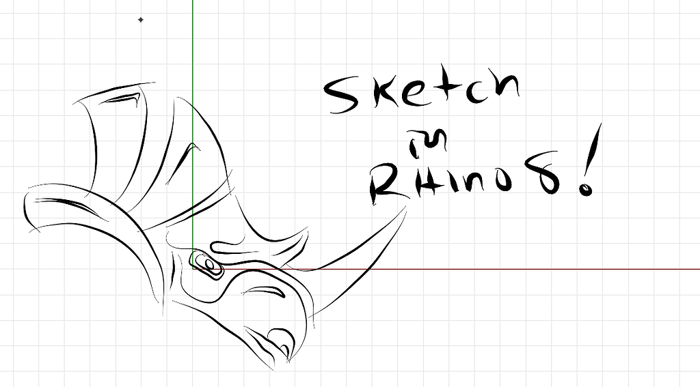
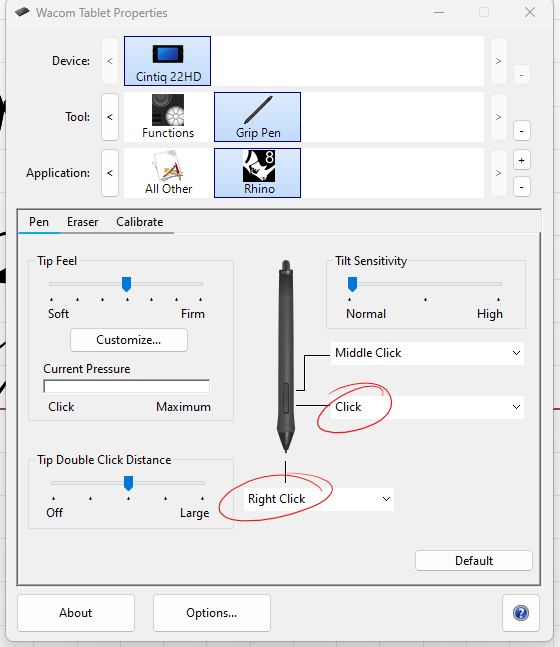
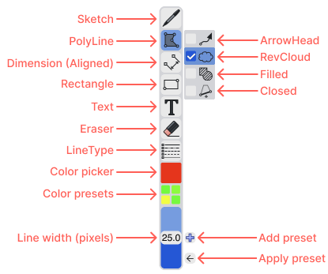
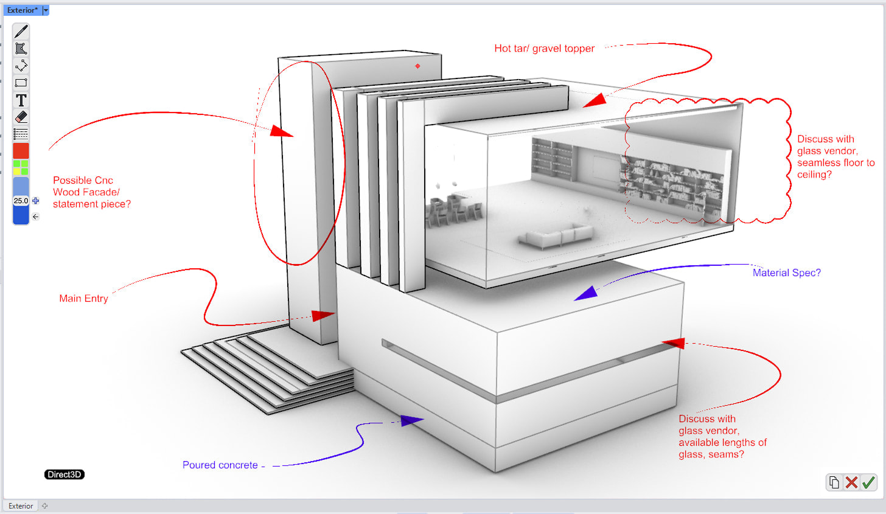

Capstone Research Foundations
1. Introduction
Drawing Intelligence: Sketching as a Computational Language
This project explores drawing as a language used to communicate with computers.

2. Spectrum of human language
3D Graph with types of languages placed at points in space
X axis → abstracted vs mimetic (language medium)
Y axis → perceptual vs conceptual (language meaning)
Z axis → ...1D relations → 5D relations...
W → interpretive vs deterministic
3. Communication between humans and computers and its evolution.
Main trend: HCI constantly moves further towards Human modes of communication and language, and away from computer modes.
Language processing computation is reducing at the human end while is increasing on the computers end.
3 vertical diagrams:
| Computer devices & HCI |
Language of communication |
level/magnitude of language processing compute |
|---|---|---|
4. Communication with AI, what they look like right now
The chatbot text interface is not sufficient to communicate form, spatial, shapes related data, drawing is required as a way of communication.
5. Reference and Inspirational projects
Past Projects
Active Projects


SILK: Sketching Interfaces Like Krazy
by James A. Landay PhD at Carnegie Mellon University (CMU)
SILK is an interface sketching system where you can draw UI elements like buttons or sliders by hand, and the system recognizes them and makes them interactive. It helps designers stay in the sketching phase longer before moving to programming the UI elements.
DrawTalking
by Karl Toby Rosenberg
DrawTalking is an interface where sketches, speech, and text labels are correlated with one another. It learns to associate sketches with objects and verbs with specific movements, allowing users to animate scenes using spoken commands.
Stable Diffusion: ControlNet
Stable Diffusion with ControlNet allows you to generate images by providing sketches. The model identifies the lines in the input image, understands the structure you’ve drawn, and generates detailed, styled images based on it. It demonstrates how AI can respond meaningfully to sketch input.
RoboSketch
by a team of researchers from KAIST (Korea Advanced Institute of Science and Technology)
RoboSketch is an interactive tool that lets you draw directly in 3D space along different planes. The sketch creates a kind of skeletal framework, which can then be animated to explore motion and form.

Claude Design - Canvas Draw
by Anthropic
Page 6 Notes



Rhino 9 BETA - Markup Tool
by McNeel
Page 7 Notes
6. Examples of Drawing Communication
Examples of drawing communication inside CAD software, 3D viewport
, what benefits in various industries time, money, effort
- Architecture
- Urban Design
- Product Design
- Mechanical Engineering
- 3D Animation
- etc..
7. Work I have done: testing out/experimenting with different ways of 3D drawing communication.
1) direct 3D "pipe" drawing
drawing planes, objects in 3D space
2) 2D raster drawings
inserted onto planes in 3D viewport
3) Traditional CAD style drawings
SPLINES, polyline, etc.
Devices required, Changes in workspace desk setups
8. Work to do in following semesters.
What paths/avenues I can take in further exploration and development of this topic.